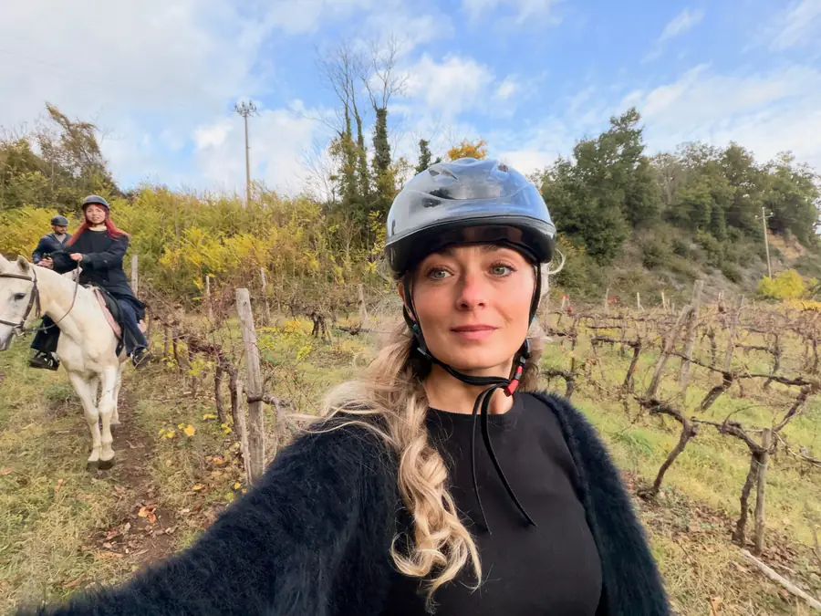
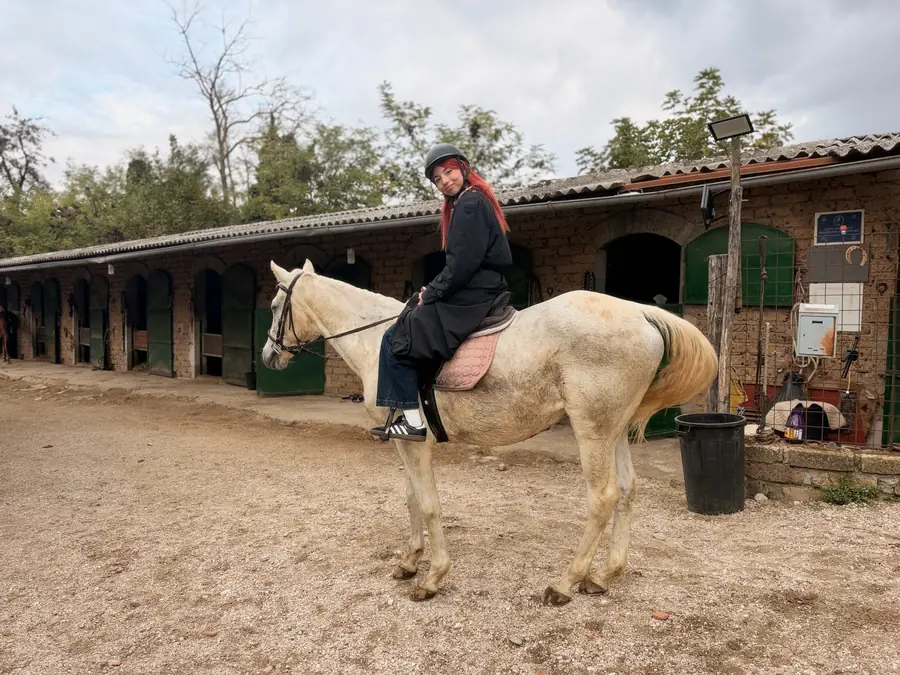
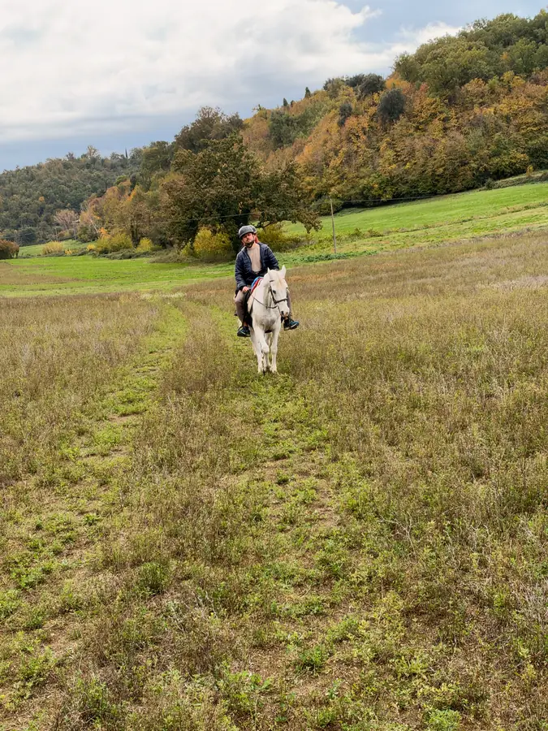
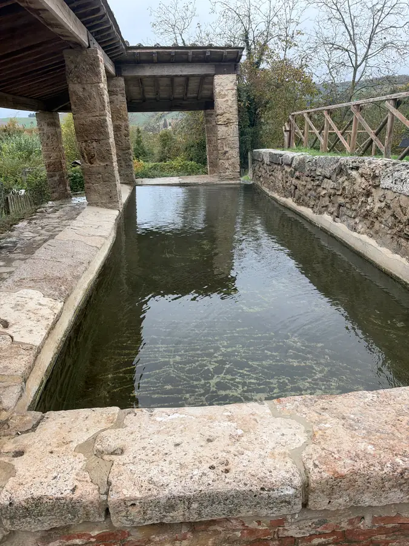

Понедельник начался с лошадей. В половине десятого мы были в конном клубе под Орвието, в местечке Ла Каччата, и два часа катались по окрестностям. Гид говорил по-итальянски, лошади, кажется, тоже, но договорились все. Покатались, нам очень понравилось. Больше тут и добавить нечего — если хорошо, то хорошо.


К полудню у нас созрел следующий вопрос: а бассейны тёплые где? Мы купаться хотим. Ответ нашёлся в Сан-Кашано-дей-Баньи. Это уже настоящая Тоскана, не так далеко от Орвието, маленький городок на холме, который живёт горячей водой. Источников там десятки, купались в них ещё этруски и римляне. А несколько лет назад археологи достали из древней священной купальни целую коллекцию бронзовых статуй — пролежали в горячем иле больше двух тысяч лет.
Около половины второго обедали в ресторане Daniela на площади. Меню тосканское, без компромиссов: пекорино с трюфелем, пичи — толстая паста ручной раскатки, паппарделле с кабаном. Всё это нам и советовали брать. Тоскана умеет кормить так, что купаться после обеда хочется уже не очень, а полежать — очень.


Но мы ведь приехали купаться. Пошли искать знаменитую бесплатную купальню. Нахожу каменную купель под навесом, вода есть, камень старый, всё по-настоящему. Фотографирую, отправляю: «Это оно?» Оказалось — не оно. Это старая прачечная, lavatoio, где здешние женщины веками стирали бельё. Хорошо, что я спросил до того, как полез. Представляете картину: американский батюшка в плавках сидит в средневековой прачечной и ждёт, когда станет тепло.
В итоге купались в Fonteverde, платном термальном бассейне. Вода около тридцати восьми градусов. В ноябре залезть в такую воду — это правильное решение, тут даже спорить не о чем.


Вечером вернулись в Орвието и, вы не поверите, не могли найти собор. В городе, где собор видно с равнины за несколько километров, мы ходили по улочкам и не понимали, куда он делся. Нашли. И около половины восьмого стояли перед фасадом в ночной подсветке.
Это, без преувеличения, один из самых красивых фасадов Италии. Строили собор почти триста лет, а первый камень заложили тринадцатого ноября 1290 года — получается, почти ровно семьсот тридцать шесть лет назад, на этой неделе. Главный мастер фасада — сиенец Лоренцо Майтани. Внизу четыре мраморные колонны, и это Библия в камне: слева сотворение мира, справа Страшный суд. Наверху роза флорентийца Орканьи и золотые мозаики, которые в подсветке горят. А центральные бронзовые двери совсем новые, шестидесятых годов, работы Эмилио Греко, на них дела милосердия. Город спорил о них лет десять, а теперь без них собор уже не представить.


И весь этот собор построен ради одного льняного плата из Больсены, где мы были вчера. Ради одного сомнения, которое Господь не оставил без ответа. Стояли, слушали рассказ про собор и смотрели наверх.
Ужинали в траттории del Moro Aronne. Я взял голубя alla ghiotta — это умбрийское блюдо, и всё уточнял: точно голубь, а не куропатка? Голубь. Ну что ж, после вчерашнего ослика меня уже ничем не удивишь.
Завтра собор изнутри и переезд в этрусскую землю.